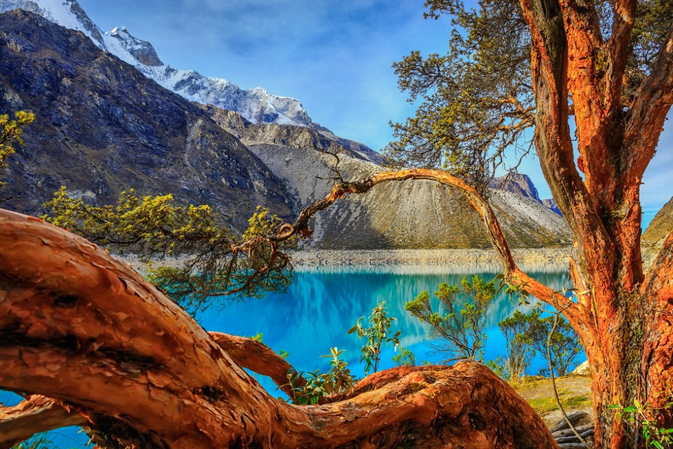
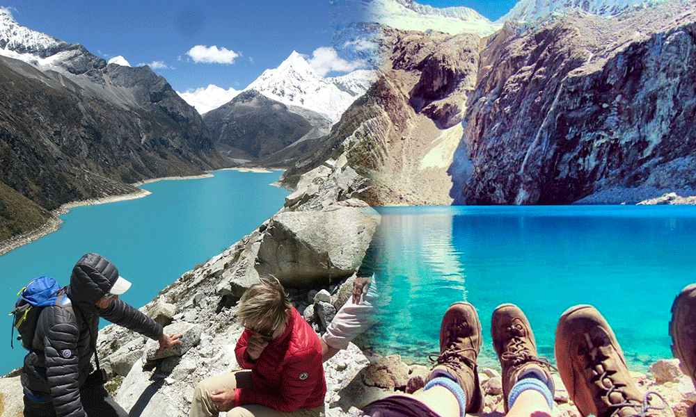

Laguna Parón: La joya turquesa de los Andes
La Laguna Parón es la laguna de agua dulce más grande de la Cordillera Blanca, ubicada en la región de Áncash. Con su característico color turquesa y rodeada de imponentes nevados, es un destino imperdible para los amantes de la naturaleza y el senderismo.
Historia
Esta laguna, situada a 4,185 metros sobre el nivel del mar, es parte del Parque Nacional Huascarán y ha sido un importante recurso hídrico para la región. También ha sido un punto clave para los exploradores y montañistas debido a su acceso a rutas de alta montaña.


Actividades y Recomendaciones
- Senderismo: Disfruta de una caminata con vistas impresionantes de la laguna y los nevados.
- Fotografía: Captura la belleza del agua turquesa y el imponente paisaje andino.
- Paseo en bote: Explora la laguna desde una perspectiva diferente a bordo de un pequeño bote.
- Aclimatación: Debido a la altitud, es recomendable pasar un día previo en Huaraz para evitar el mal de altura.
- Respeto por el entorno: No dejes basura y sigue las indicaciones para conservar este paraíso natural.